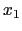
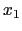
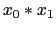

This example is found in the instanceGenerator folder in the examples folder. This example illustrates how to build a complete in-memory model instance using the OSInstance API. See the code instanceGenerator.cpp for the complete example. Here we provide a few highlights to illustrate the power of the API.
The first step is to create an OSInstance object.
OSInstance *osinstance; osinstance = new OSInstance();
Assume that the instance has two variables,  and Variable
and Variable  is a continuous variable with lower bound of and upper bound of . Variable  is a binary variable. First declare the instance to have two variables.
is a continuous variable with lower bound of and upper bound of . Variable  is a binary variable. First declare the instance to have two variables.
osinstance->setVariableNumber( 2);Next, add each variable. There is an addVariable method with the signature
addVariable(int index, string name, double lowerBound, double upperBound, char type, double init, string initString);Then the calls for these two variables are
osinstance->addVariable(0, "x0", -100, 100, 'C', OSNAN, ""); osinstance->addVariable(1, "x1", 0, 1, 'B', OSNAN, "");There is also a method setVariables for adding more than one variable simultaneously. The objective function(s) and constraints are added through similar calls.
Nonlinear terms are also easily added. The following code illustrates how to add a nonlinear term  in the <nonlinearExpressions> section of OSiL.
osinstance->instanceData->nonlinearExpressions->nl[ 1] = new Nl(); osinstance->instanceData->nonlinearExpressions->nl[ 1]->idx = 1; osinstance->instanceData->nonlinearExpressions->nl[ 1]->osExpressionTree = new OSExpressionTree(); // create a variable nl node for x0 nlNodeVariablePoint = new OSnLNodeVariable(); nlNodeVariablePoint->idx=0; nlNodeVec.push_back( nlNodeVariablePoint); // create the nl node for x1 nlNodeVariablePoint = new OSnLNodeVariable(); nlNodeVariablePoint->idx=1; nlNodeVec.push_back( nlNodeVariablePoint); // create the nl node for * nlNodePoint = new OSnLNodeTimes(); nlNodeVec.push_back( nlNodePoint); // the vectors are in postfix format // now the expression tree osinstance->instanceData->nonlinearExpressions->nl[ 1]->osExpressionTree->m_treeRoot = nlNodeVec[ 0]->createExpressionTreeFromPostfix( nlNodeVec);